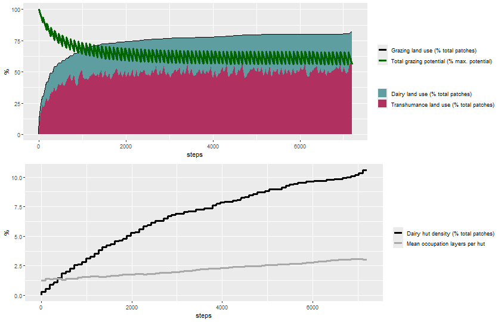

library(nlrx)2 Demonstration
library(dplyr)
Attaching package: 'dplyr'The following objects are masked from 'package:stats':
filter, lagThe following objects are masked from 'package:base':
intersect, setdiff, setequal, unionlibrary(readr)
library(ggplot2)
library(gridExtra)
Attaching package: 'gridExtra'The following object is masked from 'package:dplyr':
combinenetlogopath <- file.path("E:/Program files/NetLogo 6.4.0")
modelpath <- file.path("model/dairy-vs-transhumance-v1.nlogo")
outpath <- file.path("output")nl_single <- nl(nlversion = "6.4.0",
nlpath = netlogopath,
modelpath = modelpath,
jvmmem = 1024)observer_variables <- c("season", "day",
"population-size-dairy",
"population-size-transhumance",
"total-grazing-potential_localMax",
"dairy-pressure-coef",
"transhumance-pressure-coef",
"dairy-hut-count",
"total-occupation-layers",
"total-grazing-potential",
"grazing-land-use",
"grazing-land-use_dairy",
"grazing-land-use_transhumance",
"record_total-grazing-potential",
"record_grazing-land-use",
"unsustainable-state",
"unsustainable-dairy-herds",
"unsustainable-transhumance-herds")
default_parameters <- list(
"seed" = 123,
"type-of-experiment" = "\"user-defined\"",
"gui_area-width" = 50, "gui_area-height" = 25,
"gui_conflict-avoidance" = "true",
"gui_grazing-potential_max" = 250,
"gui_herd-size-dairy" = 10,
"gui_herd-size-transhumance" = 50,
"gui_number-herds-dairy" = 5,
"gui_number-herds-transhumance" = 10,
"display-mode" = "\"grazing-potential\""
)
expname <- "demonstration-single-run"2.1 Single-run experiment
nl_single@experiment <- experiment(expname = expname,
outpath = outpath,
repetition = 1,
tickmetrics = "true",
idsetup = "setup",
idgo = "go",
idfinal = NA_character_,
idrunnum = NA_character_,
runtime = 10^4,
evalticks = NA_integer_,
metrics = observer_variables,
variables = list(),
constants = default_parameters)
nl_single@simdesign <- simdesign_simple(nl = nl_single,
nseeds = 1)eval_variables_constants(nl_single)
print(nl_single)
results_single <- run_nl_all(nl_single)Calculate relative metrics:
total_number_patches <- default_parameters$`gui_area-width` * default_parameters$`gui_area-height`
results_single <- results_single %>%
mutate(dairy_hut_density_percent = 100 * `dairy-hut-count` / total_number_patches,
mean_occupation_layers_per_hut = `total-occupation-layers` / `dairy-hut-count`)Attach results to nl_single object:
setsim(nl_single, "simoutput") <- results_singleWrite output to outpath:
write_simoutput(nl_single)
# or use alternative:
#readr::write_csv(results_single, file = paste(outpath, "0_demonstration.csv", sep = "/"))Read output:
results_single <- read_csv(paste0(outpath, "/", expname, "_simple.csv"))Rows: 7201 Columns: 35
── Column specification ────────────────────────────────────────────────────────
Delimiter: ","
chr (4): type-of-experiment, display-mode, record_total-grazing-potential, ...
dbl (29): [run number], seed, gui_area-width, gui_area-height, gui_grazing-p...
lgl (2): gui_conflict-avoidance, unsustainable-state
ℹ Use `spec()` to retrieve the full column specification for this data.
ℹ Specify the column types or set `show_col_types = FALSE` to quiet this message.Plot trajectories of metrics:
plot_name <- paste(outpath, "demonstration_single.png", sep = "/")
png(plot_name, width = 840, height = 540)
color_mapping_grazing <- c("Total grazing potential (% max. potential)" = "darkgreen",
"Grazing land use (% total patches)" = "black",
"Dairy land use (% total patches)" = "cadetblue",
"Transhumance land use (% total patches)" = "maroon")
grazing_plot <- ggplot(results_single) +
geom_path(aes(x = `[step]`, y = `grazing-land-use`, color = "Grazing land use (% total patches)"), linewidth = 1.2) +
geom_area(aes(x = `[step]`, y = `grazing-land-use_transhumance` + `grazing-land-use_dairy`, fill = "Dairy land use (% total patches)"), linewidth = 1.2) +
geom_area(aes(x = `[step]`, y = `grazing-land-use_transhumance`, fill = "Transhumance land use (% total patches)"), linewidth = 1.2) +
geom_path(aes(x = `[step]`, y = `total-grazing-potential`, color = "Total grazing potential (% max. potential)"), linewidth = 1.2) +
labs(x = "steps", y = "%") +
scale_color_manual(name = "", values = color_mapping_grazing) +
scale_fill_manual(name = "", values = color_mapping_grazing) +
theme(legend.position = "right")
color_mapping_huts <- c("Dairy hut density (% total patches)" = "black",
"Mean occupation layers per hut" = "darkgrey")
huts_plot <- ggplot(results_single) +
geom_path(aes(x = `[step]`, y = dairy_hut_density_percent, color = "Dairy hut density (% total patches)"), linewidth = 1.2) +
geom_path(aes(x = `[step]`, y = mean_occupation_layers_per_hut, color = "Mean occupation layers per hut"), linewidth = 1.2) +
labs(x = "steps", y = "%") +
scale_color_manual(name = "", values = color_mapping_huts) +
theme(legend.position = "right")
grid.arrange(grazing_plot, huts_plot, nrow = 2)Warning: Removed 1 row containing missing values or values outside the scale range
(`geom_path()`).dev.off()png
2 rm(grazing_plot, huts_plot)knitr::include_graphics(plot_name)
Sustainability check:
unsustainable-state= TRUEdairy-pressure-coef= 0.0288983transhumance-pressure-coef= 0.0722458unsustainable-dairy-herds(%) = 100unsustainable-transhumance-herds(%) = 0